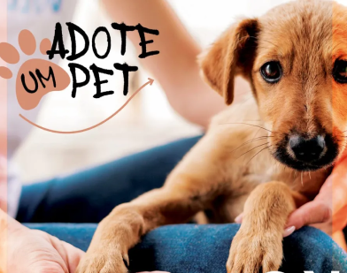

ADOÇÃO DA TAIBERTO

SEJA BEM-VINDO AO SITE DE ADOÇÃO
ESTES SÃO OS PETS PARA A ADOÇÃO:

RAÇA: BEAGLE
IDADE: 1 ANO
DESCRIÇÃO: É UM MACHO,SÚPER DIVERTIDO E ALEGRE ,GOSTA DE BRINCAR , BOM TER MUITO VERDE E ESPAÇO PARA ELE BRINCAR,DÓCIL E GENTIL

RAÇA: GOLDEN
IDADE: 3 ANOS
DESCRIÇÃO: É UMA FÊMEA , ARISCA ,ELA É PREGUIÇOSA,PORTE MÉDIO E COME RAÇÃO ESPECÍFICA

RAÇA: VIRA-LATA
IDADE: 1 ANO E MEIO
DESCRIÇÃO: É UM MACHO, SÚPER DÓCIL ,FÁCIL DE ADAPTAÇÃO, FAZ BASTANTE BAGUNÇA E COME DE TUDO (ATE O SOFÁ)

RAÇA: VIRA-LATA
IDADE: 3 MESES
DESCRIÇÃO: SÚPER ARTEIRO,MUITO BRINCALHÃO, GOSTA DE CRIANÇAS E DORME BASTANTE
Adotar pets traz alegria, amor incondicional e salva vidas, criando laços que perduram para sempre.